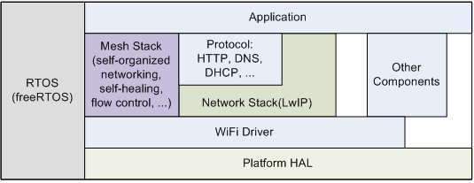
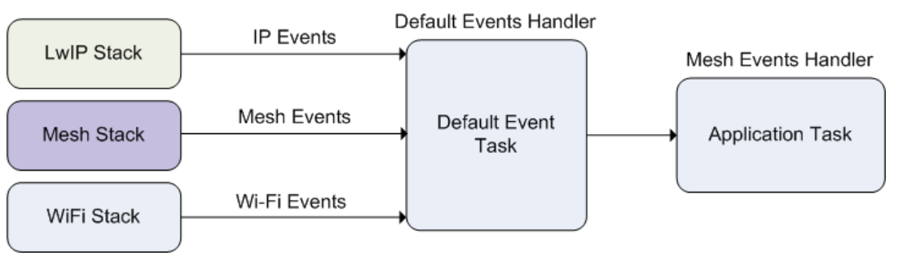

ESP-WIFI-MESH Programming Guide
This is a programming guide for ESP-WIFI-MESH, including the API reference and coding examples. This guide is split into the following parts:
For documentation regarding the ESP-WIFI-MESH protocol, please see the ESP-WIFI-MESH API Guide. For more information about ESP-WIFI-MESH Development Framework, please see ESP-WIFI-MESH Development Framework.
ESP-WIFI-MESH Programming Model
Software Stack
The ESP-WIFI-MESH software stack is built atop the Wi-Fi Driver/FreeRTOS and may use the LwIP Stack in some instances (i.e., the root node). The following diagram illustrates the ESP-WIFI-MESH software stack.

ESP-WIFI-MESH Software Stack
System Events
An application interfaces with ESP-WIFI-MESH via ESP-WIFI-MESH Events. Since ESP-WIFI-MESH is built atop the Wi-Fi stack, it is also possible for the application to interface with the Wi-Fi driver via the Wi-Fi Event Task. The following diagram illustrates the interfaces for the various System Events in an ESP-WIFI-MESH application.

ESP-WIFI-MESH System Events Delivery
The mesh_event_id_t defines all possible ESP-WIFI-MESH events and can indicate events such as the connection/disconnection of parent/child. Before ESP-WIFI-MESH events can be used, the application must register a Mesh Events handler via esp_event_handler_register() to the default event task. The Mesh Events handler that is registered contain handlers for each ESP-WIFI-MESH event relevant to the application.
Typical use cases of mesh events include using events such as MESH_EVENT_PARENT_CONNECTED and MESH_EVENT_CHILD_CONNECTED to indicate when a node can begin transmitting data upstream and downstream respectively. Likewise, IP_EVENT_STA_GOT_IP and IP_EVENT_STA_LOST_IP can be used to indicate when the root node can and cannot transmit data to the external IP network.
Warning
When using ESP-WIFI-MESH under self-organized mode, users must ensure that no calls to Wi-Fi API are made. This is due to the fact that the self-organizing mode will internally make Wi-Fi API calls to connect/disconnect/scan etc. Any Wi-Fi calls from the application (including calls from callbacks and handlers of Wi-Fi events) may interfere with ESP-WIFI-MESH's self-organizing behavior. Therefore, users should not call Wi-Fi APIs after esp_mesh_start() is called, and before esp_mesh_stop() is called.
LwIP & ESP-WIFI-MESH
The application can access the ESP-WIFI-MESH stack directly without having to go through the LwIP stack. The LwIP stack is only required by the root node to transmit/receive data to/from an external IP network. However, since every node can potentially become the root node (due to automatic root node selection), each node must still initialize the LwIP stack.
Each node that could become root is required to initialize LwIP by calling esp_netif_init(). In order to prevent non-root node access to LwIP, the application should not create or register any network interfaces using esp_netif APIs.
ESP-WIFI-MESH requires a root node to be connected with a router. Therefore, in the event that a node becomes the root, the corresponding handler must start the DHCP client service and immediately obtain an IP address. Doing so will allow other nodes to begin transmitting/receiving packets to/from the external IP network. However, this step is unnecessary if static IP settings are used.
Writing an ESP-WIFI-MESH Application
The prerequisites for starting ESP-WIFI-MESH is to initialize LwIP and Wi-Fi, The following code snippet demonstrates the necessary prerequisite steps before ESP-WIFI-MESH itself can be initialized.
ESP_ERROR_CHECK(esp_netif_init());
/* event initialization */
ESP_ERROR_CHECK(esp_event_loop_create_default());
/* Wi-Fi initialization */
wifi_init_config_t config = WIFI_INIT_CONFIG_DEFAULT();
ESP_ERROR_CHECK(esp_wifi_init(&config));
/* register IP events handler */
ESP_ERROR_CHECK(esp_event_handler_register(IP_EVENT, IP_EVENT_STA_GOT_IP, &ip_event_handler, NULL));
ESP_ERROR_CHECK(esp_wifi_set_storage(WIFI_STORAGE_FLASH));
ESP_ERROR_CHECK(esp_wifi_start());
After initializing LwIP and Wi-Fi, the process of getting an ESP-WIFI-MESH network up and running can be summarized into the following three steps:
Initialize Mesh
The following code snippet demonstrates how to initialize ESP-WIFI-MESH
/* mesh initialization */
ESP_ERROR_CHECK(esp_mesh_init());
/* register mesh events handler */
ESP_ERROR_CHECK(esp_event_handler_register(MESH_EVENT, ESP_EVENT_ANY_ID, &mesh_event_handler, NULL));
Configuring an ESP-WIFI-MESH Network
ESP-WIFI-MESH is configured via esp_mesh_set_config() which receives its arguments using the mesh_cfg_t structure. The structure contains the following parameters used to configure ESP-WIFI-MESH:
Parameter |
Description |
|---|---|
Channel |
Range from 1 to 14 |
Mesh ID |
ID of ESP-WIFI-MESH Network, see |
Router |
Router Configuration, see |
Mesh AP |
Mesh AP Configuration, see |
Crypto Functions |
Crypto Functions for Mesh IE, see |
The following code snippet demonstrates how to configure ESP-WIFI-MESH.
/* Enable the Mesh IE encryption by default */
mesh_cfg_t cfg = MESH_INIT_CONFIG_DEFAULT();
/* mesh ID */
memcpy((uint8_t *) &cfg.mesh_id, MESH_ID, 6);
/* channel (must match the router's channel) */
cfg.channel = CONFIG_MESH_CHANNEL;
/* router */
cfg.router.ssid_len = strlen(CONFIG_MESH_ROUTER_SSID);
memcpy((uint8_t *) &cfg.router.ssid, CONFIG_MESH_ROUTER_SSID, cfg.router.ssid_len);
memcpy((uint8_t *) &cfg.router.password, CONFIG_MESH_ROUTER_PASSWD,
strlen(CONFIG_MESH_ROUTER_PASSWD));
/* mesh softAP */
cfg.mesh_ap.max_connection = CONFIG_MESH_AP_CONNECTIONS;
memcpy((uint8_t *) &cfg.mesh_ap.password, CONFIG_MESH_AP_PASSWD,
strlen(CONFIG_MESH_AP_PASSWD));
ESP_ERROR_CHECK(esp_mesh_set_config(&cfg));
Start Mesh
The following code snippet demonstrates how to start ESP-WIFI-MESH.
/* mesh start */
ESP_ERROR_CHECK(esp_mesh_start());
After starting ESP-WIFI-MESH, the application should check for ESP-WIFI-MESH events to determine when it has connected to the network. After connecting, the application can start transmitting and receiving packets over the ESP-WIFI-MESH network using esp_mesh_send() and esp_mesh_recv().
Self-Organized Networking
Self-organized networking is a feature of ESP-WIFI-MESH where nodes can autonomously scan/select/connect/reconnect to other nodes and routers. This feature allows an ESP-WIFI-MESH network to operate with high degree of autonomy by making the network robust to dynamic network topologies and conditions. With self-organized networking enabled, nodes in an ESP-WIFI-MESH network are able to carry out the following actions without autonomously:
Selection or election of the root node (see Automatic Root Node Selection in Building a Network)
Selection of a preferred parent node (see Parent Node Selection in Building a Network)
Automatic reconnection upon detecting a disconnection (see Intermediate Parent Node Failure in Managing a Network)
When self-organized networking is enabled, the ESP-WIFI-MESH stack will internally make calls to Wi-Fi APIs. Therefore, the application layer should not make any calls to Wi-Fi APIs whilst self-organized networking is enabled as doing so would risk interfering with ESP-WIFI-MESH.
Toggling Self-Organized Networking
Self-organized networking can be enabled or disabled by the application at runtime by calling the esp_mesh_set_self_organized() function. The function has the two following parameters:
bool enablespecifies whether to enable or disable self-organized networking.bool select_parentspecifies whether a new parent node should be selected when enabling self-organized networking. Selecting a new parent has different effects depending the node type and the node's current state. This parameter is unused when disabling self-organized networking.
Disabling Self-Organized Networking
The following code snippet demonstrates how to disable self-organized networking.
//Disable self-organized networking
esp_mesh_set_self_organized(false, false);
ESP-WIFI-MESH will attempt to maintain the node's current Wi-Fi state when disabling self-organized networking.
If the node was previously connected to other nodes, it will remain connected.
If the node was previously disconnected and was scanning for a parent node or router, it will stop scanning.
If the node was previously attempting to reconnect to a parent node or router, it will stop reconnecting.
Enabling Self-Organized Networking
ESP-WIFI-MESH will attempt to maintain the node's current Wi-Fi state when enabling self-organized networking. However, depending on the node type and whether a new parent is selected, the Wi-Fi state of the node can change. The following table shows effects of enabling self-organized networking.
Select Parent |
Is Root Node |
Effects |
|---|---|---|
N |
N |
|
Y |
|
|
Y |
N |
|
Y |
|
The following code snipping demonstrates how to enable self-organized networking.
//Enable self-organized networking and select a new parent
esp_mesh_set_self_organized(true, true);
...
//Enable self-organized networking and manually reconnect
esp_mesh_set_self_organized(true, false);
esp_mesh_connect();
Calling Wi-Fi API
There can be instances in which an application may want to directly call Wi-Fi API whilst using ESP-WIFI-MESH. For example, an application may want to manually scan for neighboring APs. However, self-organized networking must be disabled before the application calls any Wi-Fi APIs. This will prevent the ESP-WIFI-MESH stack from attempting to call any Wi-Fi APIs and potentially interfering with the application's calls.
Therefore, application calls to Wi-Fi APIs should be placed in between calls of esp_mesh_set_self_organized() which disable and enable self-organized networking. The following code snippet demonstrates how an application can safely call esp_wifi_scan_start() whilst using ESP-WIFI-MESH.
//Disable self-organized networking
esp_mesh_set_self_organized(0, 0);
//Stop any scans already in progress
esp_wifi_scan_stop();
//Manually start scan. Will automatically stop when run to completion
esp_wifi_scan_start();
//Process scan results
...
//Re-enable self-organized networking if still connected
esp_mesh_set_self_organized(1, 0);
...
//Re-enable self-organized networking if non-root and disconnected
esp_mesh_set_self_organized(1, 1);
...
//Re-enable self-organized networking if root and disconnected
esp_mesh_set_self_organized(1, 0); //Do not select new parent
esp_mesh_connect(); //Manually reconnect to router
Application Examples
mesh/internal_communication demonstrates how to use the mesh APIs to establish a mesh network, configure it, start it, handle events, and send and receive messages across the network.
mesh/ip_internal_network demonstrates how to use mesh to create an IP capable sub-network where all nodes publish their IP and internal mesh layer to an MQTT broker while using internal communication.
mesh/manual_networking demonstrates how to manually configure a mesh network using ESP-MESH, including scanning for parent candidates, selecting a suitable parent for a node, and configuring network settings.
API Reference
Header File
This header file can be included with:
#include "esp_mesh.h"
This header file is a part of the API provided by the
esp_wificomponent. To declare that your component depends onesp_wifi, add the following to your CMakeLists.txt:REQUIRES esp_wifi
or
PRIV_REQUIRES esp_wifi
Functions
-
esp_err_t esp_mesh_init(void)
Mesh initialization.
Check whether Wi-Fi is started.
Initialize mesh global variables with default values.
- Attention
This API shall be called after Wi-Fi is started.
- Returns:
ESP_OK
ESP_FAIL
-
esp_err_t esp_mesh_deinit(void)
Mesh de-initialization.
- Release resources and stop the mesh
- Returns:
ESP_OK
ESP_FAIL
-
esp_err_t esp_mesh_start(void)
Start mesh.
Initialize mesh IE.
Start mesh network management service.
Create TX and RX queues according to the configuration.
Register mesh packets receive callback.
- Attention
This API shall be called after mesh initialization and configuration.
- Returns:
ESP_OK
ESP_FAIL
ESP_ERR_MESH_NOT_INIT
ESP_ERR_MESH_NOT_CONFIG
ESP_ERR_MESH_NO_MEMORY
-
esp_err_t esp_mesh_stop(void)
Stop mesh.
Deinitialize mesh IE.
Disconnect with current parent.
Disassociate all currently associated children.
Stop mesh network management service.
Unregister mesh packets receive callback.
Delete TX and RX queues.
Release resources.
Restore Wi-Fi softAP to default settings if Wi-Fi dual mode is enabled.
Set Wi-Fi Power Save type to WIFI_PS_NONE.
- Returns:
ESP_OK
ESP_FAIL
-
esp_err_t esp_mesh_send(const mesh_addr_t *to, const mesh_data_t *data, int flag, const mesh_opt_t opt[], int opt_count)
Send a packet over the mesh network.
Send a packet to any device in the mesh network.
Send a packet to external IP network.
- Attention
This API is not reentrant.
- Parameters:
to -- [in] the address of the final destination of the packet
If the packet is to the root, set this parameter to NULL.
If the packet is to an external IP network, set this parameter to the IPv4:PORT combination. This packet will be delivered to the root firstly, then users need to call esp_mesh_recv_toDS() on the root node to forward this packet to the final IP server address.
data -- [in] pointer to a sending mesh packet
Field size should not exceed MESH_MPS. Note that the size of one mesh packet should not exceed MESH_MTU.
Field proto should be set to data protocol in use (default is MESH_PROTO_BIN for binary).
Field tos should be set to transmission tos (type of service) in use (default is MESH_TOS_P2P for point-to-point reliable).
If the packet is to the root, MESH_TOS_P2P must be set to ensure reliable transmission.
As long as the MESH_TOS_P2P is set, the API is blocking, even if the flag is set with MESH_DATA_NONBLOCK.
As long as the MESH_TOS_DEF is set, the API is non-blocking.
flag -- [in] bitmap for data sent
Flag is at least one of the three MESH_DATA_P2P/MESH_DATA_FROMDS/MESH_DATA_TODS, which represents the direction of packet sending.
Speed up the route search
If the packet is to an internal device, MESH_DATA_P2P should be set.
If the packet is to the root ("to" parameter isn't NULL) or to external IP network, MESH_DATA_TODS should be set.
If the packet is from the root to an internal device, MESH_DATA_FROMDS should be set.
Specify whether this API is blocking or non-blocking, blocking by default.
In the situation of the root change, MESH_DATA_DROP identifies this packet can be dropped by the new root for upstream data to external IP network, we try our best to avoid data loss caused by the root change, but there is a risk that the new root is running out of memory because most of memory is occupied by the pending data which isn't read out in time by esp_mesh_recv_toDS().
Generally, we suggest esp_mesh_recv_toDS() is called after a connection with IP network is created. Thus data outgoing to external IP network via socket is just from reading esp_mesh_recv_toDS() which avoids unnecessary memory copy.
opt -- [in] options
In case of sending a packet to a certain group, MESH_OPT_SEND_GROUP is a good choice. In this option, the value field should be set to the target receiver addresses in this group.
Root sends a packet to an internal device, this packet is from external IP network in case the receiver device responds this packet, MESH_OPT_RECV_DS_ADDR is required to attach the target DS address.
opt_count -- [in] option count
Currently, this API only takes one option, so opt_count is only supported to be 1.
- Returns:
ESP_OK
ESP_FAIL
ESP_ERR_MESH_ARGUMENT
ESP_ERR_MESH_NOT_START
ESP_ERR_MESH_DISCONNECTED
ESP_ERR_MESH_OPT_UNKNOWN
ESP_ERR_MESH_EXCEED_MTU
ESP_ERR_MESH_NO_MEMORY
ESP_ERR_MESH_TIMEOUT
ESP_ERR_MESH_QUEUE_FULL
ESP_ERR_MESH_NO_ROUTE_FOUND
ESP_ERR_MESH_DISCARD
ESP_ERR_MESH_NOT_SUPPORT
ESP_ERR_MESH_XMIT
-
esp_err_t esp_mesh_send_block_time(uint32_t time_ms)
Set blocking time of esp_mesh_send()
Suggest to set the blocking time to at least 5s when the environment is poor. Otherwise, esp_mesh_send() may timeout frequently.
- Attention
This API shall be called before mesh is started.
- Parameters:
time_ms -- [in] blocking time of esp_mesh_send(), unit:ms
- Returns:
ESP_OK
-
esp_err_t esp_mesh_recv(mesh_addr_t *from, mesh_data_t *data, int timeout_ms, int *flag, mesh_opt_t opt[], int opt_count)
Receive a packet targeted to self over the mesh network.
flag could be MESH_DATA_FROMDS or MESH_DATA_TODS.
- Attention
Mesh RX queue should be checked regularly to avoid running out of memory.
Use esp_mesh_get_rx_pending() to check the number of packets available in the queue waiting to be received by applications.
- Parameters:
from -- [out] the address of the original source of the packet
data -- [out] pointer to the received mesh packet
Field proto is the data protocol in use. Should follow it to parse the received data.
Field tos is the transmission tos (type of service) in use.
timeout_ms -- [in] wait time if a packet isn't immediately available (0:no wait, portMAX_DELAY:wait forever)
flag -- [out] bitmap for data received
MESH_DATA_FROMDS represents data from external IP network
MESH_DATA_TODS represents data directed upward within the mesh network
opt -- [out] options desired to receive
MESH_OPT_RECV_DS_ADDR attaches the DS address
opt_count -- [in] option count desired to receive
Currently, this API only takes one option, so opt_count is only supported to be 1.
- Returns:
ESP_OK
ESP_ERR_MESH_ARGUMENT
ESP_ERR_MESH_NOT_START
ESP_ERR_MESH_TIMEOUT
ESP_ERR_MESH_DISCARD
-
esp_err_t esp_mesh_recv_toDS(mesh_addr_t *from, mesh_addr_t *to, mesh_data_t *data, int timeout_ms, int *flag, mesh_opt_t opt[], int opt_count)
Receive a packet targeted to external IP network.
Root uses this API to receive packets destined to external IP network
Root forwards the received packets to the final destination via socket.
If no socket connection is ready to send out the received packets and this esp_mesh_recv_toDS() hasn't been called by applications, packets from the whole mesh network will be pending in toDS queue.
Use esp_mesh_get_rx_pending() to check the number of packets available in the queue waiting to be received by applications in case of running out of memory in the root.
Using esp_mesh_set_xon_qsize() users may configure the RX queue size, default:32. If this size is too large, and esp_mesh_recv_toDS() isn't called in time, there is a risk that a great deal of memory is occupied by the pending packets. If this size is too small, it will impact the efficiency on upstream. How to decide this value depends on the specific application scenarios.
flag could be MESH_DATA_TODS.
- Attention
This API is only called by the root.
- Parameters:
from -- [out] the address of the original source of the packet
to -- [out] the address contains remote IP address and port (IPv4:PORT)
data -- [out] pointer to the received packet
Contain the protocol and applications should follow it to parse the data.
timeout_ms -- [in] wait time if a packet isn't immediately available (0:no wait, portMAX_DELAY:wait forever)
flag -- [out] bitmap for data received
MESH_DATA_TODS represents the received data target to external IP network. Root shall forward this data to external IP network via the association with router.
opt -- [out] options desired to receive
opt_count -- [in] option count desired to receive
- Returns:
ESP_OK
ESP_ERR_MESH_ARGUMENT
ESP_ERR_MESH_NOT_START
ESP_ERR_MESH_TIMEOUT
ESP_ERR_MESH_DISCARD
ESP_ERR_MESH_RECV_RELEASE
-
esp_err_t esp_mesh_set_config(const mesh_cfg_t *config)
Set mesh stack configuration.
Use MESH_INIT_CONFIG_DEFAULT() to initialize the default values, mesh IE is encrypted by default.
Mesh network is established on a fixed channel (1-14).
Mesh event callback is mandatory.
Mesh ID is an identifier of an MBSS. Nodes with the same mesh ID can communicate with each other.
Regarding to the router configuration, if the router is hidden, BSSID field is mandatory.
If BSSID field isn't set and there exists more than one router with same SSID, there is a risk that more roots than one connected with different BSSID will appear. It means more than one mesh network is established with the same mesh ID.
Root conflict function could eliminate redundant roots connected with the same BSSID, but couldn't handle roots connected with different BSSID. Because users might have such requirements of setting up routers with same SSID for the future replacement. But in that case, if the above situations happen, please make sure applications implement forward functions on the root to guarantee devices in different mesh networks can communicate with each other. max_connection of mesh softAP is limited by the max number of Wi-Fi softAP supported (max:10).
- Attention
This API shall be called before mesh is started after mesh is initialized.
- Parameters:
config -- [in] pointer to mesh stack configuration
- Returns:
ESP_OK
ESP_ERR_MESH_ARGUMENT
ESP_ERR_MESH_NOT_ALLOWED
-
esp_err_t esp_mesh_get_config(mesh_cfg_t *config)
Get mesh stack configuration.
- Parameters:
config -- [out] pointer to mesh stack configuration
- Returns:
ESP_OK
ESP_ERR_MESH_ARGUMENT
-
esp_err_t esp_mesh_set_router(const mesh_router_t *router)
Get router configuration.
- Attention
This API is used to dynamically modify the router configuration after mesh is configured.
- Parameters:
router -- [in] pointer to router configuration
- Returns:
ESP_OK
ESP_ERR_MESH_ARGUMENT
-
esp_err_t esp_mesh_get_router(mesh_router_t *router)
Get router configuration.
- Parameters:
router -- [out] pointer to router configuration
- Returns:
ESP_OK
ESP_ERR_MESH_ARGUMENT
-
esp_err_t esp_mesh_set_id(const mesh_addr_t *id)
Set mesh network ID.
- Attention
This API is used to dynamically modify the mesh network ID.
- Parameters:
id -- [in] pointer to mesh network ID
- Returns:
ESP_OK
ESP_ERR_MESH_ARGUMENT: invalid argument
-
esp_err_t esp_mesh_get_id(mesh_addr_t *id)
Get mesh network ID.
- Parameters:
id -- [out] pointer to mesh network ID
- Returns:
ESP_OK
ESP_ERR_MESH_ARGUMENT
-
esp_err_t esp_mesh_set_type(mesh_type_t type)
Designate device type over the mesh network.
MESH_IDLE: designates a device as a self-organized node for a mesh network
MESH_ROOT: designates the root node for a mesh network
MESH_LEAF: designates a device as a standalone Wi-Fi station that connects to a parent
MESH_STA: designates a device as a standalone Wi-Fi station that connects to a router
- Parameters:
type -- [in] device type
- Returns:
ESP_OK
ESP_ERR_MESH_NOT_ALLOWED
-
mesh_type_t esp_mesh_get_type(void)
Get device type over mesh network.
- Attention
This API shall be called after having received the event MESH_EVENT_PARENT_CONNECTED.
- Returns:
mesh type
-
esp_err_t esp_mesh_set_max_layer(int max_layer)
Set network max layer value.
for tree topology, the max is 25.
for chain topology, the max is 1000.
Network max layer limits the max hop count.
- Attention
This API shall be called before mesh is started.
- Parameters:
max_layer -- [in] max layer value
- Returns:
ESP_OK
ESP_ERR_MESH_ARGUMENT
ESP_ERR_MESH_NOT_ALLOWED
-
int esp_mesh_get_max_layer(void)
Get max layer value.
- Returns:
max layer value
-
esp_err_t esp_mesh_set_ap_password(const uint8_t *pwd, int len)
Set mesh softAP password.
- Attention
This API shall be called before mesh is started.
- Parameters:
pwd -- [in] pointer to the password
len -- [in] password length
- Returns:
ESP_OK
ESP_ERR_MESH_ARGUMENT
ESP_ERR_MESH_NOT_ALLOWED
-
esp_err_t esp_mesh_set_ap_authmode(wifi_auth_mode_t authmode)
Set mesh softAP authentication mode.
- Attention
This API shall be called before mesh is started.
- Parameters:
authmode -- [in] authentication mode
- Returns:
ESP_OK
ESP_ERR_MESH_ARGUMENT
ESP_ERR_MESH_NOT_ALLOWED
-
wifi_auth_mode_t esp_mesh_get_ap_authmode(void)
Get mesh softAP authentication mode.
- Returns:
authentication mode
-
esp_err_t esp_mesh_set_ap_connections(int connections)
Set mesh max connection value.
Set mesh softAP max connection = mesh max connection + non-mesh max connection
- Attention
This API shall be called before mesh is started.
- Parameters:
connections -- [in] the number of max connections
- Returns:
ESP_OK
ESP_ERR_MESH_ARGUMENT
-
int esp_mesh_get_ap_connections(void)
Get mesh max connection configuration.
- Returns:
the number of mesh max connections
-
int esp_mesh_get_non_mesh_connections(void)
Get non-mesh max connection configuration.
- Returns:
the number of non-mesh max connections
-
int esp_mesh_get_layer(void)
Get current layer value over the mesh network.
- Attention
This API shall be called after having received the event MESH_EVENT_PARENT_CONNECTED.
- Returns:
layer value
-
esp_err_t esp_mesh_get_parent_bssid(mesh_addr_t *bssid)
Get the parent BSSID.
- Attention
This API shall be called after having received the event MESH_EVENT_PARENT_CONNECTED.
- Parameters:
bssid -- [out] pointer to parent BSSID
- Returns:
ESP_OK
ESP_FAIL
-
bool esp_mesh_is_root(void)
Return whether the device is the root node of the network.
- Returns:
true/false
-
esp_err_t esp_mesh_set_self_organized(bool enable, bool select_parent)
Enable/disable self-organized networking.
Self-organized networking has three main functions: select the root node; find a preferred parent; initiate reconnection if a disconnection is detected.
Self-organized networking is enabled by default.
If self-organized is disabled, users should set a parent for the device via esp_mesh_set_parent().
- Attention
This API is used to dynamically modify whether to enable the self organizing.
- Parameters:
enable -- [in] enable or disable self-organized networking
select_parent -- [in] Only valid when self-organized networking is enabled.
if select_parent is set to true, the root will give up its mesh root status and search for a new parent like other non-root devices.
- Returns:
ESP_OK
ESP_FAIL
-
bool esp_mesh_get_self_organized(void)
Return whether enable self-organized networking or not.
- Returns:
true/false
-
esp_err_t esp_mesh_waive_root(const mesh_vote_t *vote, int reason)
Cause the root device to give up (waive) its mesh root status.
A device is elected root primarily based on RSSI from the external router.
If external router conditions change, users can call this API to perform a root switch.
In this API, users could specify a desired root address to replace itself or specify an attempts value to ask current root to initiate a new round of voting. During the voting, a better root candidate would be expected to find to replace the current one.
If no desired root candidate, the vote will try a specified number of attempts (at least 15). If no better root candidate is found, keep the current one. If a better candidate is found, the new better one will send a root switch request to the current root, current root will respond with a root switch acknowledgment.
After that, the new candidate will connect to the router to be a new root, the previous root will disconnect with the router and choose another parent instead.
Root switch is completed with minimal disruption to the whole mesh network.
- Attention
This API is only called by the root.
- Parameters:
vote -- [in] vote configuration
If this parameter is set NULL, the vote will perform the default 15 times.
Field percentage threshold is 0.9 by default.
Field is_rc_specified shall be false.
Field attempts shall be at least 15 times.
reason -- [in] only accept MESH_VOTE_REASON_ROOT_INITIATED for now
- Returns:
ESP_OK
ESP_ERR_MESH_QUEUE_FULL
ESP_ERR_MESH_DISCARD
ESP_FAIL
-
esp_err_t esp_mesh_set_vote_percentage(float percentage)
Set vote percentage threshold for approval of being a root (default:0.9)
During the networking, only obtaining vote percentage reaches this threshold, the device could be a root.
- Attention
This API shall be called before mesh is started.
- Parameters:
percentage -- [in] vote percentage threshold
- Returns:
ESP_OK
ESP_FAIL
-
float esp_mesh_get_vote_percentage(void)
Get vote percentage threshold for approval of being a root.
- Returns:
percentage threshold
-
esp_err_t esp_mesh_set_ap_assoc_expire(int seconds)
Set mesh softAP associate expired time (default:10 seconds)
If mesh softAP hasn't received any data from an associated child within this time, mesh softAP will take this child inactive and disassociate it.
If mesh softAP is encrypted, this value should be set a greater value, such as 30 seconds.
- Parameters:
seconds -- [in] the expired time
- Returns:
ESP_OK
ESP_FAIL
-
int esp_mesh_get_ap_assoc_expire(void)
Get mesh softAP associate expired time.
- Returns:
seconds
-
int esp_mesh_get_total_node_num(void)
Get total number of devices in current network (including the root)
- Attention
The returned value might be incorrect when the network is changing.
- Returns:
total number of devices (including the root)
-
int esp_mesh_get_routing_table_size(void)
Get the number of devices in this device's sub-network (including self)
- Returns:
the number of devices over this device's sub-network (including self)
-
esp_err_t esp_mesh_get_routing_table(mesh_addr_t *mac, int len, int *size)
Get routing table of this device's sub-network (including itself)
- Parameters:
mac -- [out] pointer to routing table
len -- [in] routing table size(in bytes)
size -- [out] pointer to the number of devices in routing table (including itself)
- Returns:
ESP_OK
ESP_ERR_MESH_ARGUMENT
-
esp_err_t esp_mesh_post_toDS_state(bool reachable)
Post the toDS state to the mesh stack.
- Attention
This API is only for the root.
- Parameters:
reachable -- [in] this state represents whether the root is able to access external IP network
- Returns:
ESP_OK
ESP_FAIL
-
esp_err_t esp_mesh_get_tx_pending(mesh_tx_pending_t *pending)
Return the number of packets pending in the queue waiting to be sent by the mesh stack.
- Parameters:
pending -- [out] pointer to the TX pending
- Returns:
ESP_OK
ESP_FAIL
-
esp_err_t esp_mesh_get_rx_pending(mesh_rx_pending_t *pending)
Return the number of packets available in the queue waiting to be received by applications.
- Parameters:
pending -- [out] pointer to the RX pending
- Returns:
ESP_OK
ESP_FAIL
-
int esp_mesh_available_txupQ_num(const mesh_addr_t *addr, uint32_t *xseqno_in)
Return the number of packets could be accepted from the specified address.
- Parameters:
addr -- [in] self address or an associate children address
xseqno_in -- [out] sequence number of the last received packet from the specified address
- Returns:
the number of upQ for a certain address
-
esp_err_t esp_mesh_set_xon_qsize(int qsize)
Set the number of RX queue for the node, the average number of window allocated to one of its child node is: wnd = xon_qsize / (2 * max_connection + 1). However, the window of each child node is not strictly equal to the average value, it is affected by the traffic also.
- Attention
This API shall be called before mesh is started.
- Parameters:
qsize -- [in] default:32 (min:16)
- Returns:
ESP_OK
ESP_FAIL
-
int esp_mesh_get_xon_qsize(void)
Get queue size.
- Returns:
the number of queue
-
esp_err_t esp_mesh_allow_root_conflicts(bool allowed)
Set whether allow more than one root existing in one network.
The default value is true, that is, multiple roots are allowed.
- Parameters:
allowed -- [in] allow or not
- Returns:
ESP_OK
ESP_WIFI_ERR_NOT_INIT
ESP_WIFI_ERR_NOT_START
-
bool esp_mesh_is_root_conflicts_allowed(void)
Check whether allow more than one root to exist in one network.
- Returns:
true/false
-
esp_err_t esp_mesh_set_group_id(const mesh_addr_t *addr, int num)
Set group ID addresses.
- Parameters:
addr -- [in] pointer to new group ID addresses
num -- [in] the number of group ID addresses
- Returns:
ESP_OK
ESP_MESH_ERR_ARGUMENT
-
esp_err_t esp_mesh_delete_group_id(const mesh_addr_t *addr, int num)
Delete group ID addresses.
- Parameters:
addr -- [in] pointer to deleted group ID address
num -- [in] the number of group ID addresses
- Returns:
ESP_OK
ESP_MESH_ERR_ARGUMENT
-
int esp_mesh_get_group_num(void)
Get the number of group ID addresses.
- Returns:
the number of group ID addresses
-
esp_err_t esp_mesh_get_group_list(mesh_addr_t *addr, int num)
Get group ID addresses.
- Parameters:
addr -- [out] pointer to group ID addresses
num -- [in] the number of group ID addresses
- Returns:
ESP_OK
ESP_MESH_ERR_ARGUMENT
-
bool esp_mesh_is_my_group(const mesh_addr_t *addr)
Check whether the specified group address is my group.
- Returns:
true/false
-
esp_err_t esp_mesh_set_capacity_num(int num)
Set mesh network capacity (max:1000, default:300)
- Attention
This API shall be called before mesh is started.
- Parameters:
num -- [in] mesh network capacity
- Returns:
ESP_OK
ESP_ERR_MESH_NOT_ALLOWED
ESP_MESH_ERR_ARGUMENT
-
int esp_mesh_get_capacity_num(void)
Get mesh network capacity.
- Returns:
mesh network capacity
-
esp_err_t esp_mesh_set_ie_crypto_funcs(const mesh_crypto_funcs_t *crypto_funcs)
Set mesh IE crypto functions.
- Attention
This API can be called at any time after mesh is configured.
- Parameters:
crypto_funcs -- [in] crypto functions for mesh IE
If crypto_funcs is set to NULL, mesh IE is no longer encrypted.
- Returns:
ESP_OK
-
esp_err_t esp_mesh_set_ie_crypto_key(const char *key, int len)
Set mesh IE crypto key.
- Attention
This API can be called at any time after mesh is configured.
- Parameters:
key -- [in] ASCII crypto key
len -- [in] length in bytes, range:8~64
- Returns:
ESP_OK
ESP_MESH_ERR_ARGUMENT
-
esp_err_t esp_mesh_get_ie_crypto_key(char *key, int len)
Get mesh IE crypto key.
- Parameters:
key -- [out] ASCII crypto key
len -- [in] length in bytes, range:8~64
- Returns:
ESP_OK
ESP_MESH_ERR_ARGUMENT
-
esp_err_t esp_mesh_set_root_healing_delay(int delay_ms)
Set delay time before starting root healing.
- Parameters:
delay_ms -- [in] delay time in milliseconds
- Returns:
ESP_OK
-
int esp_mesh_get_root_healing_delay(void)
Get delay time before network starts root healing.
- Returns:
delay time in milliseconds
-
esp_err_t esp_mesh_fix_root(bool enable)
Enable network Fixed Root Setting.
Enabling fixed root disables automatic election of the root node via voting.
All devices in the network shall use the same Fixed Root Setting (enabled or disabled).
If Fixed Root is enabled, users should make sure a root node is designated for the network.
- Parameters:
enable -- [in] enable or not
- Returns:
ESP_OK
-
bool esp_mesh_is_root_fixed(void)
Check whether network Fixed Root Setting is enabled.
Enable/disable network Fixed Root Setting by API esp_mesh_fix_root().
Network Fixed Root Setting also changes with the "flag" value in parent networking IE.
- Returns:
true/false
-
esp_err_t esp_mesh_set_parent(const wifi_config_t *parent, const mesh_addr_t *parent_mesh_id, mesh_type_t my_type, int my_layer)
Set a specified parent for the device.
- Attention
This API can be called at any time after mesh is configured.
- Parameters:
parent -- [in] parent configuration, the SSID and the channel of the parent are mandatory.
If the BSSID is set, make sure that the SSID and BSSID represent the same parent, otherwise the device will never find this specified parent.
parent_mesh_id -- [in] parent mesh ID,
If this value is not set, the original mesh ID is used.
my_type -- [in] mesh type
MESH_STA is not supported.
If the parent set for the device is the same as the router in the network configuration, then my_type shall set MESH_ROOT and my_layer shall set MESH_ROOT_LAYER.
my_layer -- [in] mesh layer
my_layer of the device may change after joining the network.
If my_type is set MESH_NODE, my_layer shall be greater than MESH_ROOT_LAYER.
If my_type is set MESH_LEAF, the device becomes a standalone Wi-Fi station and no longer has the ability to extend the network.
- Returns:
ESP_OK
ESP_ERR_ARGUMENT
ESP_ERR_MESH_NOT_CONFIG
-
esp_err_t esp_mesh_scan_get_ap_ie_len(int *len)
Get mesh networking IE length of one AP.
- Parameters:
len -- [out] mesh networking IE length
- Returns:
ESP_OK
ESP_ERR_WIFI_NOT_INIT
ESP_ERR_INVALID_ARG
ESP_ERR_WIFI_FAIL
-
esp_err_t esp_mesh_scan_get_ap_record(wifi_ap_record_t *ap_record, void *buffer)
Get AP record.
- Attention
Different from esp_wifi_scan_get_ap_records(), this API only gets one of APs scanned each time. See "manual_networking" example.
- Parameters:
ap_record -- [out] pointer to one AP record
buffer -- [out] pointer to the mesh networking IE of this AP
- Returns:
ESP_OK
ESP_ERR_WIFI_NOT_INIT
ESP_ERR_INVALID_ARG
ESP_ERR_WIFI_FAIL
-
esp_err_t esp_mesh_flush_upstream_packets(void)
Flush upstream packets pending in to_parent queue and to_parent_p2p queue.
- Returns:
ESP_OK
-
esp_err_t esp_mesh_get_subnet_nodes_num(const mesh_addr_t *child_mac, int *nodes_num)
Get the number of nodes in the subnet of a specific child.
- Parameters:
child_mac -- [in] an associated child address of this device
nodes_num -- [out] pointer to the number of nodes in the subnet of a specific child
- Returns:
ESP_OK
ESP_ERR_MESH_NOT_START
ESP_ERR_MESH_ARGUMENT
-
esp_err_t esp_mesh_get_subnet_nodes_list(const mesh_addr_t *child_mac, mesh_addr_t *nodes, int nodes_num)
Get nodes in the subnet of a specific child.
- Parameters:
child_mac -- [in] an associated child address of this device
nodes -- [out] pointer to nodes in the subnet of a specific child
nodes_num -- [in] the number of nodes in the subnet of a specific child
- Returns:
ESP_OK
ESP_ERR_MESH_NOT_START
ESP_ERR_MESH_ARGUMENT
-
esp_err_t esp_mesh_switch_channel(const uint8_t *new_bssid, int csa_newchan, int csa_count)
Cause the root device to add Channel Switch Announcement Element (CSA IE) to beacon.
Set the new channel
Set how many beacons with CSA IE will be sent before changing a new channel
Enable the channel switch function
- Attention
This API is only called by the root.
- Parameters:
new_bssid -- [in] the new router BSSID if the router changes
csa_newchan -- [in] the new channel number to which the whole network is moving
csa_count -- [in] channel switch period(beacon count), unit is based on beacon interval of its softAP, the default value is 15.
- Returns:
ESP_OK
-
esp_err_t esp_mesh_get_router_bssid(uint8_t *router_bssid)
Get the router BSSID.
- Parameters:
router_bssid -- [out] pointer to the router BSSID
- Returns:
ESP_OK
ESP_ERR_WIFI_NOT_INIT
ESP_ERR_INVALID_ARG
-
int64_t esp_mesh_get_tsf_time(void)
Get the TSF time.
- Returns:
the TSF time
-
esp_err_t esp_mesh_set_topology(esp_mesh_topology_t topo)
Set mesh topology. The default value is MESH_TOPO_TREE.
MESH_TOPO_CHAIN supports up to 1000 layers
- Attention
This API shall be called before mesh is started.
- Parameters:
topo -- [in] MESH_TOPO_TREE or MESH_TOPO_CHAIN
- Returns:
ESP_OK
ESP_MESH_ERR_ARGUMENT
ESP_ERR_MESH_NOT_ALLOWED
-
esp_mesh_topology_t esp_mesh_get_topology(void)
Get mesh topology.
- Returns:
MESH_TOPO_TREE or MESH_TOPO_CHAIN
-
esp_err_t esp_mesh_enable_ps(void)
Enable mesh Power Save function.
- Attention
This API shall be called before mesh is started.
- Returns:
ESP_OK
ESP_ERR_WIFI_NOT_INIT
ESP_ERR_MESH_NOT_ALLOWED
-
esp_err_t esp_mesh_disable_ps(void)
Disable mesh Power Save function.
- Attention
This API shall be called before mesh is started.
- Returns:
ESP_OK
ESP_ERR_WIFI_NOT_INIT
ESP_ERR_MESH_NOT_ALLOWED
-
bool esp_mesh_is_ps_enabled(void)
Check whether the mesh Power Save function is enabled.
- Returns:
true/false
-
bool esp_mesh_is_device_active(void)
Check whether the device is in active state.
If the device is not in active state, it will neither transmit nor receive frames.
- Returns:
true/false
-
esp_err_t esp_mesh_set_active_duty_cycle(int dev_duty, int dev_duty_type)
Set the device duty cycle and type.
The range of dev_duty values is 1 to 100. The default value is 10.
dev_duty = 100, the PS will be stopped.
dev_duty is better to not less than 5.
dev_duty_type could be MESH_PS_DEVICE_DUTY_REQUEST or MESH_PS_DEVICE_DUTY_DEMAND.
If dev_duty_type is set to MESH_PS_DEVICE_DUTY_REQUEST, the device will use a nwk_duty provided by the network.
If dev_duty_type is set to MESH_PS_DEVICE_DUTY_DEMAND, the device will use the specified dev_duty.
- Attention
This API can be called at any time after mesh is started.
- Parameters:
dev_duty -- [in] device duty cycle
dev_duty_type -- [in] device PS duty cycle type, not accept MESH_PS_NETWORK_DUTY_MASTER
- Returns:
ESP_OK
ESP_FAIL
-
esp_err_t esp_mesh_get_active_duty_cycle(int *dev_duty, int *dev_duty_type)
Get device duty cycle and type.
- Parameters:
dev_duty -- [out] device duty cycle
dev_duty_type -- [out] device PS duty cycle type
- Returns:
ESP_OK
-
esp_err_t esp_mesh_set_network_duty_cycle(int nwk_duty, int duration_mins, int applied_rule)
Set the network duty cycle, duration and rule.
The range of nwk_duty values is 1 to 100. The default value is 10.
nwk_duty is the network duty cycle the entire network or the up-link path will use. A device that successfully sets the nwk_duty is known as a NWK-DUTY-MASTER.
duration_mins specifies how long the specified nwk_duty will be used. Once duration_mins expires, the root will take over as the NWK-DUTY-MASTER. If an existing NWK-DUTY-MASTER leaves the network, the root will take over as the NWK-DUTY-MASTER again.
duration_mins = (-1) represents nwk_duty will be used until a new NWK-DUTY-MASTER with a different nwk_duty appears.
Only the root can set duration_mins to (-1).
If applied_rule is set to MESH_PS_NETWORK_DUTY_APPLIED_ENTIRE, the nwk_duty will be used by the entire network.
If applied_rule is set to MESH_PS_NETWORK_DUTY_APPLIED_UPLINK, the nwk_duty will only be used by the up-link path nodes.
The root does not accept MESH_PS_NETWORK_DUTY_APPLIED_UPLINK.
A nwk_duty with duration_mins(-1) set by the root is the default network duty cycle used by the entire network.
- Attention
This API can be called at any time after mesh is started.
In self-organized network, if this API is called before mesh is started in all devices, (1)nwk_duty shall be set to the same value for all devices; (2)duration_mins shall be set to (-1); (3)applied_rule shall be set to MESH_PS_NETWORK_DUTY_APPLIED_ENTIRE; after the voted root appears, the root will become the NWK-DUTY-MASTER and broadcast the nwk_duty and its identity of NWK-DUTY-MASTER.
If the root is specified (FIXED-ROOT), call this API in the root to provide a default nwk_duty for the entire network.
After joins the network, any device can call this API to change the nwk_duty, duration_mins or applied_rule.
- Parameters:
nwk_duty -- [in] network duty cycle
duration_mins -- [in] duration (unit: minutes)
applied_rule -- [in] only support MESH_PS_NETWORK_DUTY_APPLIED_ENTIRE
- Returns:
ESP_OK
ESP_FAIL
-
esp_err_t esp_mesh_get_network_duty_cycle(int *nwk_duty, int *duration_mins, int *dev_duty_type, int *applied_rule)
Get the network duty cycle, duration, type and rule.
- Parameters:
nwk_duty -- [out] current network duty cycle
duration_mins -- [out] the duration of current nwk_duty
dev_duty_type -- [out] if it includes MESH_PS_DEVICE_DUTY_MASTER, this device is the current NWK-DUTY-MASTER.
applied_rule -- [out] MESH_PS_NETWORK_DUTY_APPLIED_ENTIRE
- Returns:
ESP_OK
-
int esp_mesh_get_running_active_duty_cycle(void)
Get the running active duty cycle.
The running active duty cycle of the root is 100.
If duty type is set to MESH_PS_DEVICE_DUTY_REQUEST, the running active duty cycle is nwk_duty provided by the network.
If duty type is set to MESH_PS_DEVICE_DUTY_DEMAND, the running active duty cycle is dev_duty specified by the users.
In a mesh network, devices are typically working with a certain duty-cycle (transmitting, receiving and sleep) to reduce the power consumption. The running active duty cycle decides the amount of awake time within a beacon interval. At each start of beacon interval, all devices wake up, broadcast beacons, and transmit packets if they do have pending packets for their parents or for their children. Note that Low-duty-cycle means devices may not be active in most of the time, the latency of data transmission might be greater.
- Returns:
the running active duty cycle
Unions
-
union mesh_addr_t
- #include <esp_mesh.h>
Mesh address.
-
union mesh_event_info_t
- #include <esp_mesh.h>
Mesh event information.
Public Members
-
mesh_event_channel_switch_t channel_switch
channel switch
-
mesh_event_child_connected_t child_connected
child connected
-
mesh_event_child_disconnected_t child_disconnected
child disconnected
-
mesh_event_routing_table_change_t routing_table
routing table change
-
mesh_event_connected_t connected
parent connected
-
mesh_event_disconnected_t disconnected
parent disconnected
-
mesh_event_no_parent_found_t no_parent
no parent found
-
mesh_event_layer_change_t layer_change
layer change
-
mesh_event_toDS_state_t toDS_state
toDS state, devices shall check this state firstly before trying to send packets to external IP network. This state indicates right now whether the root is capable of sending packets out. If not, devices had better to wait until this state changes to be MESH_TODS_REACHABLE.
-
mesh_event_vote_started_t vote_started
vote started
-
mesh_event_root_address_t root_addr
root address
-
mesh_event_root_switch_req_t switch_req
root switch request
-
mesh_event_root_conflict_t root_conflict
other powerful root
-
mesh_event_root_fixed_t root_fixed
fixed root
-
mesh_event_scan_done_t scan_done
scan done
-
mesh_event_network_state_t network_state
network state, such as whether current mesh network has a root.
-
mesh_event_find_network_t find_network
network found that can join
-
mesh_event_router_switch_t router_switch
new router information
-
mesh_event_ps_duty_t ps_duty
PS duty information
-
mesh_event_channel_switch_t channel_switch
-
union mesh_rc_config_t
- #include <esp_mesh.h>
Vote address configuration.
Public Members
-
int attempts
max vote attempts before a new root is elected automatically by mesh network. (min:15, 15 by default)
-
mesh_addr_t rc_addr
a new root address specified by users for API esp_mesh_waive_root()
-
int attempts
Structures
-
struct mip_t
IP address and port.
-
struct mesh_event_channel_switch_t
Channel switch information.
Public Members
-
uint8_t channel
new channel
-
uint8_t channel
-
struct mesh_event_connected_t
Parent connected information.
Public Members
-
wifi_event_sta_connected_t connected
parent information, same as Wi-Fi event SYSTEM_EVENT_STA_CONNECTED does
-
uint16_t self_layer
layer
-
uint8_t duty
parent duty
-
wifi_event_sta_connected_t connected
-
struct mesh_event_no_parent_found_t
No parent found information.
Public Members
-
int scan_times
scan times being through
-
int scan_times
-
struct mesh_event_layer_change_t
Layer change information.
Public Members
-
uint16_t new_layer
new layer
-
uint16_t new_layer
-
struct mesh_event_vote_started_t
vote started information
Public Members
-
int reason
vote reason, vote could be initiated by children or by the root itself
-
int attempts
max vote attempts before stopped
-
mesh_addr_t rc_addr
root address specified by users via API esp_mesh_waive_root()
-
int reason
-
struct mesh_event_find_network_t
find a mesh network that this device can join
-
struct mesh_event_root_switch_req_t
Root switch request information.
Public Members
-
int reason
root switch reason, generally root switch is initialized by users via API esp_mesh_waive_root()
-
mesh_addr_t rc_addr
the address of root switch requester
-
int reason
-
struct mesh_event_root_conflict_t
Other powerful root address.
-
struct mesh_event_routing_table_change_t
Routing table change.
-
struct mesh_event_scan_done_t
Scan done event information.
Public Members
-
uint8_t number
the number of APs scanned
-
uint8_t number
-
struct mesh_event_network_state_t
Network state information.
Public Members
-
bool is_rootless
whether current mesh network has a root
-
bool is_rootless
-
struct mesh_event_ps_duty_t
PS duty information.
Public Members
-
uint8_t duty
parent or child duty
-
mesh_event_child_connected_t child_connected
child info
-
uint8_t duty
-
struct mesh_opt_t
Mesh option.
-
struct mesh_data_t
Mesh data for esp_mesh_send() and esp_mesh_recv()
Public Members
-
uint8_t *data
data
-
uint16_t size
data size
-
mesh_proto_t proto
data protocol
-
mesh_tos_t tos
data type of service
-
uint8_t *data
-
struct mesh_router_t
Router configuration.
Public Members
-
uint8_t ssid[32]
SSID
-
uint8_t ssid_len
length of SSID
-
uint8_t bssid[6]
BSSID, if this value is specified, users should also specify "allow_router_switch".
-
uint8_t password[64]
password
-
bool allow_router_switch
if the BSSID is specified and this value is also set, when the router of this specified BSSID fails to be found after "fail" (mesh_attempts_t) times, the whole network is allowed to switch to another router with the same SSID. The new router might also be on a different channel. The default value is false. There is a risk that if the password is different between the new switched router and the previous one, the mesh network could be established but the root will never connect to the new switched router.
-
uint8_t ssid[32]
-
struct mesh_ap_cfg_t
Mesh softAP configuration.
-
struct mesh_cfg_t
Mesh initialization configuration.
Public Members
-
uint8_t channel
channel, the mesh network on
-
bool allow_channel_switch
if this value is set, when "fail" (mesh_attempts_t) times is reached, device will change to a full channel scan for a network that could join. The default value is false.
-
mesh_addr_t mesh_id
mesh network identification
-
mesh_router_t router
router configuration
-
mesh_ap_cfg_t mesh_ap
mesh softAP configuration
-
const mesh_crypto_funcs_t *crypto_funcs
crypto functions
-
uint8_t channel
-
struct mesh_vote_t
Vote.
Public Members
-
float percentage
vote percentage threshold for approval of being a root
-
bool is_rc_specified
if true, rc_addr shall be specified (Unimplemented). if false, attempts value shall be specified to make network start root election.
-
mesh_rc_config_t config
vote address configuration
-
float percentage
-
struct mesh_tx_pending_t
The number of packets pending in the queue waiting to be sent by the mesh stack.
-
struct mesh_rx_pending_t
The number of packets available in the queue waiting to be received by applications.
Macros
-
MESH_ROOT_LAYER
root layer value
-
MESH_MTU
max transmit unit(in bytes)
-
MESH_MPS
max payload size(in bytes)
-
ESP_ERR_MESH_WIFI_NOT_START
Mesh error code definition.
Wi-Fi isn't started
-
ESP_ERR_MESH_NOT_INIT
mesh isn't initialized
-
ESP_ERR_MESH_NOT_CONFIG
mesh isn't configured
-
ESP_ERR_MESH_NOT_START
mesh isn't started
-
ESP_ERR_MESH_NOT_SUPPORT
not supported yet
-
ESP_ERR_MESH_NOT_ALLOWED
operation is not allowed
-
ESP_ERR_MESH_NO_MEMORY
out of memory
-
ESP_ERR_MESH_ARGUMENT
illegal argument
-
ESP_ERR_MESH_EXCEED_MTU
packet size exceeds MTU
-
ESP_ERR_MESH_TIMEOUT
timeout
-
ESP_ERR_MESH_DISCONNECTED
disconnected with parent on station interface
-
ESP_ERR_MESH_QUEUE_FAIL
queue fail
-
ESP_ERR_MESH_QUEUE_FULL
queue full
-
ESP_ERR_MESH_NO_PARENT_FOUND
no parent found to join the mesh network
-
ESP_ERR_MESH_NO_ROUTE_FOUND
no route found to forward the packet
-
ESP_ERR_MESH_OPTION_NULL
no option found
-
ESP_ERR_MESH_OPTION_UNKNOWN
unknown option
-
ESP_ERR_MESH_XON_NO_WINDOW
no window for software flow control on upstream
-
ESP_ERR_MESH_INTERFACE
low-level Wi-Fi interface error
-
ESP_ERR_MESH_DISCARD_DUPLICATE
discard the packet due to the duplicate sequence number
-
ESP_ERR_MESH_DISCARD
discard the packet
-
ESP_ERR_MESH_VOTING
vote in progress
-
ESP_ERR_MESH_XMIT
TX fail, the tx state is a value other than timeout and disconnect
-
ESP_ERR_MESH_QUEUE_READ
error in reading queue
-
ESP_ERR_MESH_PS
mesh PS is not specified as enable or disable
-
ESP_ERR_MESH_RECV_RELEASE
release esp_mesh_recv_toDS
-
MESH_DATA_ENC
Flags bitmap for esp_mesh_send() and esp_mesh_recv()
data encrypted (Unimplemented)
-
MESH_DATA_P2P
point-to-point delivery over the mesh network
-
MESH_DATA_FROMDS
receive from external IP network
-
MESH_DATA_TODS
identify this packet is target to external IP network
-
MESH_DATA_NONBLOCK
esp_mesh_send() non-block
-
MESH_DATA_DROP
in the situation of the root having been changed, identify this packet can be dropped by new root
-
MESH_DATA_GROUP
identify this packet is target to a group address
-
MESH_OPT_SEND_GROUP
Option definitions for esp_mesh_send() and esp_mesh_recv()
data transmission by group; used with esp_mesh_send() and shall have payload
-
MESH_OPT_RECV_DS_ADDR
return a remote IP address; used with esp_mesh_send() and esp_mesh_recv()
-
MESH_ASSOC_FLAG_MAP_ASSOC
Flag of mesh networking IE.
Mesh AP doesn't detect children leave yet
-
MESH_ASSOC_FLAG_VOTE_IN_PROGRESS
station in vote, set when root vote start, clear when connect to router or when root switch
-
MESH_ASSOC_FLAG_STA_VOTED
station vote done, set when connect to router
-
MESH_ASSOC_FLAG_NETWORK_FREE
no root in current network
-
MESH_ASSOC_FLAG_STA_VOTE_EXPIRE
the voted address is expired, means the voted device lose the chance to be root
-
MESH_ASSOC_FLAG_ROOTS_FOUND
roots conflict is found, means that there are at least two roots in the mesh network
-
MESH_ASSOC_FLAG_ROOT_FIXED
the root is fixed in the mesh network
-
MESH_PS_DEVICE_DUTY_REQUEST
Mesh PS (Power Save) duty cycle type.
requests to join a network PS without specifying a device duty cycle. After the device joins the network, a network duty cycle will be provided by the network
-
MESH_PS_DEVICE_DUTY_DEMAND
requests to join a network PS and specifies a demanded device duty cycle
-
MESH_PS_NETWORK_DUTY_MASTER
indicates the device is the NWK-DUTY-MASTER (network duty cycle master)
-
MESH_PS_NETWORK_DUTY_APPLIED_ENTIRE
Mesh PS (Power Save) duty cycle applied rule.
-
MESH_PS_NETWORK_DUTY_APPLIED_UPLINK
-
MESH_INIT_CONFIG_DEFAULT()
Type Definitions
-
typedef mesh_addr_t mesh_event_root_address_t
Root address.
-
typedef wifi_event_sta_disconnected_t mesh_event_disconnected_t
Parent disconnected information.
-
typedef wifi_event_ap_staconnected_t mesh_event_child_connected_t
Child connected information.
-
typedef wifi_event_ap_stadisconnected_t mesh_event_child_disconnected_t
Child disconnected information.
-
typedef wifi_event_sta_connected_t mesh_event_router_switch_t
New router information.
Enumerations
-
enum mesh_event_id_t
Enumerated list of mesh event id.
Values:
-
enumerator MESH_EVENT_STARTED
mesh is started
-
enumerator MESH_EVENT_STOPPED
mesh is stopped
-
enumerator MESH_EVENT_CHANNEL_SWITCH
channel switch
-
enumerator MESH_EVENT_CHILD_CONNECTED
a child is connected on softAP interface
-
enumerator MESH_EVENT_CHILD_DISCONNECTED
a child is disconnected on softAP interface
-
enumerator MESH_EVENT_ROUTING_TABLE_ADD
routing table is changed by adding newly joined children
-
enumerator MESH_EVENT_ROUTING_TABLE_REMOVE
routing table is changed by removing leave children
-
enumerator MESH_EVENT_PARENT_CONNECTED
parent is connected on station interface
-
enumerator MESH_EVENT_PARENT_DISCONNECTED
parent is disconnected on station interface
-
enumerator MESH_EVENT_NO_PARENT_FOUND
no parent found
-
enumerator MESH_EVENT_LAYER_CHANGE
layer changes over the mesh network
-
enumerator MESH_EVENT_TODS_STATE
state represents whether the root is able to access external IP network. This state is a manual event that needs to be triggered with esp_mesh_post_toDS_state().
-
enumerator MESH_EVENT_VOTE_STARTED
the process of voting a new root is started either by children or by the root
-
enumerator MESH_EVENT_VOTE_STOPPED
the process of voting a new root is stopped
-
enumerator MESH_EVENT_ROOT_ADDRESS
the root address is obtained. It is posted by mesh stack automatically.
-
enumerator MESH_EVENT_ROOT_SWITCH_REQ
root switch request sent from a new voted root candidate
-
enumerator MESH_EVENT_ROOT_SWITCH_ACK
root switch acknowledgment responds the above request sent from current root
-
enumerator MESH_EVENT_ROOT_ASKED_YIELD
the root is asked yield by a more powerful existing root. If self organized is disabled and this device is specified to be a root by users, users should set a new parent for this device. if self organized is enabled, this device will find a new parent by itself, users could ignore this event.
-
enumerator MESH_EVENT_ROOT_FIXED
when devices join a network, if the setting of Fixed Root for one device is different from that of its parent, the device will update the setting the same as its parent's. Fixed Root Setting of each device is variable as that setting changes of the root.
-
enumerator MESH_EVENT_SCAN_DONE
if self-organized networking is disabled, user can call esp_wifi_scan_start() to trigger this event, and add the corresponding scan done handler in this event.
-
enumerator MESH_EVENT_NETWORK_STATE
network state, such as whether current mesh network has a root.
-
enumerator MESH_EVENT_STOP_RECONNECTION
the root stops reconnecting to the router and non-root devices stop reconnecting to their parents.
-
enumerator MESH_EVENT_FIND_NETWORK
when the channel field in mesh configuration is set to zero, mesh stack will perform a full channel scan to find a mesh network that can join, and return the channel value after finding it.
-
enumerator MESH_EVENT_ROUTER_SWITCH
if users specify BSSID of the router in mesh configuration, when the root connects to another router with the same SSID, this event will be posted and the new router information is attached.
-
enumerator MESH_EVENT_PS_PARENT_DUTY
parent duty
-
enumerator MESH_EVENT_PS_CHILD_DUTY
child duty
-
enumerator MESH_EVENT_PS_DEVICE_DUTY
device duty
-
enumerator MESH_EVENT_MAX
-
enumerator MESH_EVENT_STARTED
-
enum mesh_type_t
Device type.
Values:
-
enumerator MESH_IDLE
hasn't joined the mesh network yet
-
enumerator MESH_ROOT
the only sink of the mesh network. Has the ability to access external IP network
-
enumerator MESH_NODE
intermediate device. Has the ability to forward packets over the mesh network
-
enumerator MESH_LEAF
has no forwarding ability
-
enumerator MESH_STA
connect to router with a standalone Wi-Fi station mode, no network expansion capability
-
enumerator MESH_IDLE
-
enum mesh_proto_t
Protocol of transmitted application data.
Values:
-
enumerator MESH_PROTO_BIN
binary
-
enumerator MESH_PROTO_HTTP
HTTP protocol
-
enumerator MESH_PROTO_JSON
JSON format
-
enumerator MESH_PROTO_MQTT
MQTT protocol
-
enumerator MESH_PROTO_AP
IP network mesh communication of node's AP interface
-
enumerator MESH_PROTO_STA
IP network mesh communication of node's STA interface
-
enumerator MESH_PROTO_BIN
-
enum mesh_tos_t
For reliable transmission, mesh stack provides three type of services.
Values:
-
enumerator MESH_TOS_P2P
provide P2P (point-to-point) retransmission on mesh stack by default
-
enumerator MESH_TOS_E2E
provide E2E (end-to-end) retransmission on mesh stack (Unimplemented)
-
enumerator MESH_TOS_DEF
no retransmission on mesh stack
-
enumerator MESH_TOS_P2P
-
enum mesh_vote_reason_t
Vote reason.
Values:
-
enumerator MESH_VOTE_REASON_ROOT_INITIATED
vote is initiated by the root
-
enumerator MESH_VOTE_REASON_CHILD_INITIATED
vote is initiated by children
-
enumerator MESH_VOTE_REASON_ROOT_INITIATED
-
enum mesh_disconnect_reason_t
Mesh disconnect reason code.
Values:
-
enumerator MESH_REASON_CYCLIC
cyclic is detected
-
enumerator MESH_REASON_PARENT_IDLE
parent is idle
-
enumerator MESH_REASON_LEAF
the connected device is changed to a leaf
-
enumerator MESH_REASON_DIFF_ID
in different mesh ID
-
enumerator MESH_REASON_ROOTS
root conflict is detected
-
enumerator MESH_REASON_PARENT_STOPPED
parent has stopped the mesh
-
enumerator MESH_REASON_SCAN_FAIL
scan fail
-
enumerator MESH_REASON_IE_UNKNOWN
unknown IE
-
enumerator MESH_REASON_WAIVE_ROOT
waive root
-
enumerator MESH_REASON_PARENT_WORSE
parent with very poor RSSI
-
enumerator MESH_REASON_EMPTY_PASSWORD
use an empty password to connect to an encrypted parent
-
enumerator MESH_REASON_PARENT_UNENCRYPTED
connect to an unencrypted parent/router
-
enumerator MESH_REASON_CYCLIC